Le premier incubateur hybride du Grand Est. L’endroit où tu arrêtes de rêver ton projet pour commencer ta transformation.
Au Kokon, nous croyons qu’une idée n’a de valeur que si elle rencontre le terrain.
Nous accueillons les idées à l’état brut, avec la conviction que chacune d'entre elles peut devenir un projet concret.
Ici, on teste, on apprend, on recommence. Entourés d’étudiants, d’alumni et d’entreprises de l’EEE, vous n'êtes jamais seuls dans votre progression.
Ton idée à l'état brut. Un cadre bienveillant et structurant pour tisser les premiers fils de ton projet. Accède à nos ateliers au Krealab pour valider ton modèle, sans jugement.
La transformation s'opère. Profite d'un coaching bimensuel exigeant et connecte-toi à l'écosystème de l'Espace Européen de l'Entreprise pour muer et adapter ta solution au marché.
Déploie tes ailes devant les investisseurs. Entraîne-toi au pitch de manière professionnelle.
Le Kokon est le premier incubateur hybride du Grand Est, situé au cœur de l'Espace Européen de l'Entreprise à Schiltigheim. Notre programme accompagne les idées brutes jusqu'à leur lancement sur le marché et s'adresse à trois profils complémentaires : les étudiants de l'ESG et des écoles Galileo du KAMPUS, nos Alumni (jeunes diplômés), et les entrepreneurs externes. C'est cette mixité qui fait la force de notre écosystème.
Notre accompagnement est un parcours continu en trois phases clés :
Notre modèle économique est pensé pour être accessible tout en garantissant l'engagement des porteurs de projet :
Ces frais de dossier nous permettent d'assurer un filtrage qualitatif dès l'entrée.
Nous fonctionnons par paliers. Pour intégrer la phase d'Éclosion (ouverte aux étudiants), une simple lettre de motivation suffit. En revanche, le passage en phase d'Incubation (pour tous les profils) est sélectif : vous devrez soumettre un dossier solide (incluant un business plan) et défendre votre projet lors d'un pitch.
Les entreprises locales sont le moteur de notre écosystème. Nous proposons plusieurs niveaux de partenariats allant de 3 000 € à 9 000 € par an. En rejoignant le Kokon, vous bénéficiez d'une visibilité ciblée, vous pouvez animer des ateliers experts, sourcer directement vos futurs talents (accès aux CV des incubés), soumettre vos propres problématiques business à nos startups, ou même sponsoriser un projet spécifique lors du Pitch Day.